Chapter 8 Remote Sensing
Human impact on ecosystems and the environment has been growing over time, as shown by the equation (Awadhiya 2021):
\[I = P \times A \times T\]
In this equation, \(I\) stands for the impact humans have on the environment, \(P\) is the human population (or population density if we’re considering impact per unit area), \(A\) represents human affluence (the amount of resources we consume), and \(T\) indicates the level of technology that helps us shape our surroundings and extract resources from our environment.
It is clear that human impact increases with the increasing number of people, growing resource needs, and advancement of technology. Over time, all three of these factors have risen: our population has grown, our demand for resources has increased as we have become wealthier, and our technology has advanced, allowing us to extract more resources more quickly and more efficiently. And so our impact on our environment has also ballooned over time.
One significant consequence of these growing impacts is the increase in wildfires. Most wildfires around the world are caused by human activities (Robinne and Secretariat 2021). Some wildfires are intentionally set, such as to drive animals into traps, clear land for farming, or divert authorities from crime scenes. Others are more accidental and less intentional, including fires spreading from campsites or agricultural fields, sparks from electrical lines, or even the effects of climate change. As the global population expands and our resource demands increase, the frequency and intensity of human-caused fires, both intentional and accidental, also rise.
While we can’t quickly reduce the human population or stop progress, we can use technology to address these issues. The problems created by technology can often be solved with more technology. Green technologies, for example, help us reduce environmental impacts while still enjoying the benefits of development. Similarly, new technologies can help manage and reduce wildfires. Improved firefighting techniques and better resource allocation can make our efforts more effective. This chapter, along with the next ones, will explore some of these innovative technologies and their potential benefits.
8.1 Fundamentals
In the previous chapters, we have seen how the use of satellite imagery has revolutionized wildfire management. Satellites provide repeated measurements in a cost-effective manner, even in challenging terrains and inaccessible areas. Over time, satellite imagery has enabled us to identify trends, forecast, and model wildfires. This capability falls under the realm of ‘remote sensing,’ defined as sensing from a distance. Let us now delve deeper into remote sensing.
8.1.1 What is Remote Sensing?
Remote sensing is the process of acquiring information about objects or phenomena without directly being in physical contact with them (Awadhiya 2016). The term ‘remote’ refers to the distance from which the information is gathered, and ‘sensing’ pertains to the process of collecting data about the target.
Remote sensing comprises three fundamental components:
- Target object: The entity or phenomenon whose information is to be acquired.
- Sensor: A device capable of detecting and recording data from a distance, typically storing it for subsequent analysis.
- Transmission method: The mechanism through which information is transmitted from the target to the sensor.
Remote sensing is a widely utilized technology in both natural and technological domains. Within the biological realm, numerous organisms, including humans, rely on remote sensing to perceive and respond to their surroundings. For instance, animals may detect a predator through the rustling of leaves or locate a branch to jump without direct physical contact with either the predator or the branch. Similarly, our sensory organs are designed to gather information from a distance. When we perceive a friend approaching, we utilize light waves to discern their presence without physical contact. In this scenario, the target is the friend, the sensor is the eye, and the transmission medium is light waves. Similarly, when we hear a bee buzzing, sound waves convey information to our ears, enabling us to detect the bee’s presence without physical contact. In this instance, the target is the bee, the sensor is the ear, and the transmission medium is sound waves.
Through technological advancements, we have developed numerous remote sensors. For instance, a microphone functions similarly to our ears, capturing sound. A camera mimics the eye, with its diaphragm resembling the iris and its lens akin to the eye’s lens. A camera’s film or electronic sensor parallels the retina. Satellite sensors operate on analogous principles to a camera, albeit designed to gather information from space. While they cannot detect sound waves (as sound necessitates a medium for transmission), they utilize electromagnetic waves, which can traverse the vacuum of space.
8.1.2 Electromagnetic spectrum
Satellite remote sensing utilizes electromagnetic waves to transmit information from the target to the sensor. Electromagnetic waves are generated when an electric field oscillates in conjunction with a magnetic field, resulting in a wave that carries energy perpendicular to both fields. Unlike sound waves, electromagnetic waves do not necessitate a medium and can traverse a vacuum.
Electromagnetic waves are characterized by their wavelength (\(\lambda\)) and frequency (\(\nu\)). Wavelength is the distance over which the wave’s shape repeats, or the distance between corresponding points of consecutive waves. It is measured in units of length such as meters, centimeters, or millimeters.
Frequency is the number of waves that pass a given point in a fixed period of time. It is measured in units of per time, with the SI unit being hertz (Hz). One hertz equals one event per second, or \(s^{-1}\) in SI base units.
The relationship between wavelength, frequency, and the speed of light in a vacuum (\(c\)) — defined as exactly 299,792,458 meters per second — is given by:
\[c = \lambda \nu\]
Rearranging this equation yields:
\[\lambda = \frac{c}{\nu}\]
\[\nu = \frac{c}{\lambda}\]
Thus, wavelength and frequency are inversely related — as one increases, the other decreases.
When we look at Sun’s light through a prism, we can observe a spectrum where differently colored lights get separated based on their wavelengths. The electromagnetic spectrum includes this, and also other wavelengths that we cannot see through our eyes. It is categorized based on wavelength into various types of waves, including radio waves, microwaves, infrared, optical light, ultraviolet light, X-rays, and gamma rays [Table 8.1](Center 2013b). Each type of wave has unique properties and applications, generally related to its energy and its ability to penetrate different materials.
| Region | Wavelength (m) | Frequency (Hz) | Energy (J) |
|---|---|---|---|
| Radio | \(> 1 \times 10^{-1}\) | \(< 3 \times 10^{9}\) | \(< 2 \times 10^{-24}\) |
| Microwave | \(1 \times 10^{-3} - 1 \times 10^{-1}\) | \(3 \times 10^{9} - 3 \times 10^{11}\) | \(2 \times 10^{-24} - 2 \times 10^{-22}\) |
| Infrared | \(7 \times 10^{-7} - 1 \times 10^{-3}\) | \(3 \times 10^{11} - 4 \times 10^{14}\) | \(2 \times 10^{-22} - 3 \times 10^{-19}\) |
| Optical | \(4 \times 10^{-7} - 7 \times 10^{-7}\) | \(4 \times 10^{14} - 7.5 \times 10^{14}\) | \(3 \times 10^{-19} - 5 \times 10^{-19}\) |
| UV | \(1 \times 10^{-8} - 4 \times 10^{-7}\) | \(7.5 \times 10^{14} - 3 \times 10^{16}\) | \(5 \times 10^{-19} - 2 \times 10^{-17}\) |
| X-ray | \(1 \times 10^{-11} - 1 \times 10^{-8}\) | \(3 \times 10^{16} - 3 \times 10^{19}\) | \(2 \times 10^{-17} - 2 \times 10^{-14}\) |
| Gamma-ray | \(< 1 \times 10^{-11}\) | \(> 3 \times 10^{19}\) | \(> 2 \times 10^{-14}\) |
The energy \(E\) of a photon in an electromagnetic wave is governed by the equation:
\[E = h \nu = \frac{h c}{\lambda}\]
where \(h\) denotes Planck’s constant (\(6.62607015 \times 10^{-34}\) Joule-second), \(\nu\) is the frequency of the wave, \(c\) is the speed of light in a vacuum (\(299,792,458\) meters per second), and \(\lambda\) represents the wavelength. This relationship shows that photon energy is directly proportional to the frequency of the electromagnetic wave and inversely proportional to its wavelength. As the frequency increases (or the wavelength decreases), the energy of the photon increases correspondingly. This principle is crucial in understanding the behavior of different types of electromagnetic waves across the spectrum.
8.1.3 Interaction of waves with matter
Electromagnetic waves interact with materials through several fundamental processes. These interactions play a crucial role in determining how we perceive objects and how sensors detect these waves:
Reflection: Reflection is a phenomenon that occurs when electromagnetic waves encounter a surface and are redirected back into the medium from which they originated. The fundamental principle governing reflection is the law of reflection, which establishes that the angle of incidence (the angle formed between the incoming wave and the normal to the surface) is equal to the angle of reflection (the angle formed between the reflected wave and the normal). Reflection plays a crucial role in the visibility of objects and is an essential component of optical devices such as mirrors and telescopes.
Absorption: Absorption is the process through which the energy of an electromagnetic wave is absorbed by the material it encounters. This energy is frequently converted into heat or other forms of energy. The extent of absorption is influenced by the material’s properties, including its color, molecular composition, and electronic structure. Black surfaces exhibit greater absorption of visible light compared to white or reflective surfaces. Absorption plays a pivotal role in applications such as spectroscopy, wherein the material’s interaction with specific wavelengths provides insights into its composition and temperature.
Refraction: Refraction involves the bending of electromagnetic waves as they pass through materials of different optical densities. When waves enter a medium with a different optical density, their speed changes, causing the waves to bend. This bending is described by Snell’s law, which relates the angles of incidence and refraction to the indices of refraction of the two media. Refraction is responsible for phenomena such as the distortion of objects under water and the focusing of light in lenses and microscopes.
Transmission: Transmission is the passage of electromagnetic waves through a medium. The transmission capability of a medium for electromagnetic waves is contingent upon its transparency and the specific wavelengths involved. For instance, glass exhibits transparency to visible light but opacity to ultraviolet and infrared radiation. Transmission is paramount for communication technologies such as optical fibers and radio waves, which rely on the ability of materials to convey signals over extended distances. Furthermore, the transmission of electromagnetic waves through the atmosphere (and even through a vacuum) is the enabler of satellite remote sensing.
8.1.4 Atmospheric interactions and atmospheric window
Electromagnetic waves traversing the Earth’s atmosphere undergo intricate interactions. The atmosphere selectively absorbs and scatters specific wavelengths of radiation, permitting others to pass through. This phenomenon results in the formation of the “atmospheric window,” a range of wavelengths minimally impacted by atmospheric interference. This window holds paramount importance for remote sensing applications, as it delineates the wavelengths suitable for observing the Earth’s surface from space or aerial platforms.
The atmospheric window enables electromagnetic waves to penetrate the Earth’s atmosphere and return to the sensor with minimal distortion. This phenomenon is crucial for accurate data collection and interpretation in remote sensing applications. Variations within this electromagnetic wave spectrum can provide valuable insights into surface properties, including temperature, vegetation cover, and urban development.
8.1.5 Passive and active remote sensing
Remote sensing relies on the generation, detection, and analysis of electromagnetic waves. Based on the source of electromagnetic radiation, remote sensing is classified into two primary categories — passive and active remote sensing.
Passive Remote Sensing: Passive remote sensing employs natural sources of electromagnetic radiation, such as sunlight. The Sun’s energy traverses the vacuum of space and the Earth’s atmosphere, ultimately reaching the Earth’s surface and interacting with it. The reflected or emitted radiation from the surface subsequently traverses back through the atmosphere to a sensor, such as an eye, photographic plate, or satellite sensor. This process is akin to observing an object during daylight using the Sun’s energy. Instruments for passive remote sensing are typically simpler and less expensive because they do not necessitate an active source of radiation. Notable examples include the Landsat satellites operated by NASA and the Sentinel-2 series of satellites operated by the European Space Agency. These instruments rely on the inherent variations in reflected sunlight to provide data on land cover, vegetation health, and other surface characteristics.
Active Remote Sensing: Active remote sensing involves the emission of electromagnetic radiation by the sensor, which subsequently interacts with the target and is returned to the sensor. This process is analogous to using a flashlight to illuminate an object in darkness. Active remote sensing systems necessitate a power source to generate the radiation and are generally more intricate and costly. Notable examples include NASA’s GEDI LiDAR mission, which measures forest canopy heights, and the European Space Agency’s Sentinel-1 RADAR mission, which provides detailed information on surface deformations and land cover changes. Active remote sensing enables detailed observations even in low-light or no-light conditions or through obscured or cloudy atmospheres (when employing non-optical wavelengths such as radio waves). Consequently, it holds significant value in applications such as environmental monitoring, disaster management, and infrastructure assessment.
Both passive and active remote sensing play pivotal roles in data collection and environmental monitoring. Each method possesses distinct advantages and is selected based on the specific requirements of observation and the characteristics of the target area.
8.2 Earth-observation satellites
Earth-observation satellites are advanced spacecraft positioned in orbit around our planet to provide continuous and comprehensive monitoring. These satellites are instrumental in a range of applications including weather forecasting, environmental monitoring, resource management, cartography, and even military surveillance. Their ability to observe and collect data from space has revolutionized our understanding of Earth and its processes.
8.2.1 Historical development
The concept of capturing images of Earth from above has evolved significantly over the centuries. Early attempts at aerial photography included the use of balloons, which, in the mid-19th century, allowed for the collection of images from elevated positions. By the early 20th century, pigeon cameras, which were mounted on pigeons, provided a novel approach to capturing aerial imagery. During the World Wars, aircraft-mounted cameras played a critical role in reconnaissance, offering a strategic advantage. The dawn of space-based remote sensing began in 1946 with a sub-orbital V-2 rocket equipped with a camera. This marked the first step towards the extensive satellite imagery we rely on today. The Landsat program, initiated in 1972, represents a significant milestone in Earth observation, providing the first systematic satellite imagery.
8.2.2 Satellite orbits
Satellites are positioned at various altitudes, which impacts their observational capabilities and operational characteristics. Satellites in low Earth orbit (LEO) operate at altitudes ranging from about 200 km to 2,000 km. These satellites provide high-resolution images and cover small areas in great detail. However, they experience significant atmospheric drag, which requires more fuel for orbit maintenance and regular re-boost operations. Conversely, satellites in higher orbits, such as those in a geostationary orbit, can observe larger portions of the Earth but with less detail. These higher orbits, located at approximately 35,786 km above the Earth, require substantial energy for launch and orbital insertion. Geostationary satellites appear fixed relative to a specific point on the Earth’s surface, which is ideal for continuous monitoring of weather patterns, fire spread, and communications.
8.2.3 Time period of a satellite
Satellites typically move in elliptical orbits. However, to better understand satellite orbits, we can simplify the scenario by considering a satellite moving in a circular orbit. Let \(m\) represent the mass of the satellite, and \(r\) its distance from the center of the Earth. The gravitational force acting on the satellite is given by:
\[ F = \frac{G \times M \times m}{r^2} \]
where \(G\) is the gravitational constant (\(6.674 \times 10^{-11} \, \text{m}^3 \text{kg}^{-1} \text{s}^{-2}\)), and \(M\) is the mass of the Earth. This gravitational force provides the centripetal acceleration necessary for the satellite’s circular motion. Thus,
\[ \frac{G \times M \times m}{r^2} = m \times \frac{v^2}{r} \]
where \(v\) is the satellite’s linear speed. Solving for \(v\), we get
\[ v = \sqrt{\frac{G \times M}{r}} \]
During one complete orbit, the satellite travels a distance of \(2 \pi r\). Therefore, its speed \(v\) can be expressed as:
\[ v = \frac{2 \pi r}{T} \]
where \(T\) is the orbital period. Rearranging to solve for \(T\):
\[ T = \frac{2 \pi r}{v} = 2 \pi \sqrt{\frac{r^3}{G \times M}} \]
This relationship indicates that as the distance \(r\) from the center of the Earth increases, the orbital period \(T\) also increases. Satellites in higher orbits take longer to complete a single orbit compared to those in lower orbits.
To compute the height of a geostationary satellite, we set \(T\) as 24 hours, to get an orbital radius of 42,164 kilometers. Subtracting the radius of the Earth, 6,378 kilometers gives the altitude of 35,786 kilometers relative to the Earth’s surface.
8.2.4 Types of satellite orbits
Earth-observation satellites typically operate in one of two primary types of orbits, each serving specific observational needs:
Sun-Synchronous Orbit: Also known as a heliosynchronous orbit, this is a near-polar orbit where the satellite passes over the same point on Earth at the same local solar time each day. This consistency allows for observations under similar lighting conditions, which is valuable for monitoring changes over time. Sun-synchronous orbits are typically located at altitudes between 700 and 800 km, resulting in an orbital period of about 100 minutes.
Geostationary Orbit: Satellites in this orbit are positioned 35,786 km above the Earth’s equator, where their orbital period matches the Earth’s rotational period. This synchronization allows the satellite to remain fixed relative to a specific point on the Earth’s surface. Geostationary orbits are particularly advantageous for continuous monitoring of weather patterns, communications, and broadcasting.
8.2.5 Satellite data
Satellite data is collected and stored in digital raster formats. A raster file represents data in a grid format, with information stored in a matrix of rows and columns. Each cell in this matrix is known as a pixel, and each pixel has a value called its digital number (DN). The DN represents the information captured by the pixel, and can include:
- Photographic images: RGB values from a photograph or scanned map.
- Continuous data: Measurements such as elevation, temperature, or spectral information collected by remote sensors.
- Discrete data: Categorical information such as land use classification or vegetation types.
Raster images are characterized by several key resolution parameters:
Spatial resolution: This refers to the sensor’s capacity to discern between closely proximate objects on the Earth’s surface. Enhanced spatial resolution facilitates the capture of finer details and more precise identification of features. For instance, a high spatial resolution may enable the detection of individual trees or even leaves, whereas lower resolution may only reveal broader forested areas. Factors that influence spatial resolution encompass the sensor’s optical characteristics, its distance from the target, and atmospheric conditions. Higher spatial resolution yields more detailed images but also entails larger file sizes.
Spectral resolution: This indicates the sensor’s capability to discern and record diverse electromagnetic radiation bands. For instance, a monochrome camera captures only brightness values across a broad spectrum, rendering various colors as the same shade of gray. Incorporating color filters enables the detection of specific wavelengths, resulting in images with distinct color bands. Higher spectral resolution entails employing additional filters, thereby capturing more detailed spectral information at the expense of larger file sizes.
Radiometric resolution: This describes the sensor’s ability to discern differences in radiance or brightness levels. For example, a sensor with a 1-bit radiometric resolution might classify pixels as either black (0) or white (1), while a 2-bit resolution can differentiate four levels of brightness (00, 01, 10, and 11). Modern sensors typically use 8-bit or higher radiometric resolution, allowing for a greater range of brightness levels at the cost of larger file sizes.
Temporal resolution: This refers to the frequency at which a satellite revisits the same area of the Earth’s surface. Higher temporal resolution enables more frequent observations, facilitating the detection of rapid temporal changes. However, this increased frequency necessitates a substantial volume of data storage and processing. Temporal resolution for an orbit can be enhanced by deploying multiple satellites within the same orbital configuration.
As an example, Landsat 7 satellite captures images with eight spectral bands, in spatial resolutions ranging from 15 to 60 meters, a temporal resolution of 16 days, and an 8-bit radiometric resolution. The detailed band information for Landsat 7 is summarized in table 8.2 (Center 2013a).
| Band | Wavelength (µm) | Resolution (m) |
|---|---|---|
| Band 1 - Blue | 0.45-0.52 | 30 |
| Band 2 - Green | 0.52-0.60 | 30 |
| Band 3 - Red | 0.63-0.69 | 30 |
| Band 4 - Near Infrared (NIR) | 0.77-0.90 | 30 |
| Band 5 - Shortwave Infrared (SWIR) 1 | 1.55-1.75 | 30 |
| Band 6 - Thermal | 10.40-12.50 | 60 |
| Band 7 - Shortwave Infrared (SWIR) 2 | 2.09-2.35 | 30 |
| Band 8 - Panchromatic | 0.52-0.90 | 15 |
8.3 RADAR
RADAR, an acronym for “RAdio Detection And Ranging,” is a sophisticated active remote sensing technology that employs radio waves to detect and analyze objects. It entails emitting radio waves towards a target. Upon encountering the target, a portion of the signal is reflected back to the RADAR system, which subsequently detects and processes this return signal. The elapsed time between the emission and reception of the signal, coupled with any variations in the signal’s properties, furnishes comprehensive information regarding the target’s distance, size, shape, and other pertinent characteristics.
In Section 8.1.4, we explored the concept of the atmospheric window, which refers to the range of wavelengths that can pass through the Earth’s atmosphere with minimal absorption and scattering. RADAR technology significantly benefits from this concept. Unlike optical sensors that rely on visible light and can be severely impacted by atmospheric conditions such as clouds, rain, or fog, RADAR systems operate effectively unhindered across a broad range of microwave and radio frequencies. These frequencies experience minimal attenuation as they travel through the atmosphere, making RADAR particularly advantageous for continuous monitoring under adverse weather conditions. This capability is especially crucial for applications where persistent cloud cover is common, such as in certain rainforests and maritime / polar regions.
Furthermore, while passive optical remote sensing systems dependent on sunlight are rendered ineffective during the nighttime, RADAR systems can function continuously. This capability enables the acquisition of continuous data irrespective of the time of day, providing a significant advantage for monitoring and managing natural resources, environmental changes, and other phenomena that require regular observations.
8.3.1 SAR
Synthetic Aperture Radar (SAR) is an advanced form of RADAR technology that significantly enhances spatial resolution. As discussed in Section 8.2.5, high spatial resolution is crucial for capturing fine details in remote sensing imagery. SAR achieves this through a technique called synthetic aperture, which circumvents the limitations of the physical antenna size that can be deployed on satellites or aircraft.
In traditional RADAR systems, spatial resolution is directly proportional to the antenna’s size: larger antennas yield finer resolution. However, practical constraints dictate the size of antennas that can be launched and maintained on satellites, spacecraft, and aircraft. To address this, SAR employs a method where a small antenna is utilized to collect data over the Earth. Each pass generates a segment of data for a specific ground area. By combining these segments computationally, SAR simulates the effect of a much larger antenna, effectively increasing the spatial resolution of the resulting imagery. This approach enables SAR to produce high-resolution images that reveal intricate features of the Earth’s surface.
SAR operates across various frequency bands, each with distinct characteristics and applications. These bands are categorized based on their wavelength, and their detailed descriptions are provided in Table 8.3, courtesy of NASA Earth Data37. The selection of band influences the penetration depth, resolution, and the types of surfaces or materials that can be effectively analyzed. For instance, different bands may be more suitable for detecting vegetation, soil moisture, or urban infrastructure, and thus a combination of bands may enhance the versatility of SAR in environmental and scientific applications.
| Band | Frequency | Wavelength | Typical Application |
|---|---|---|---|
| Ka | 27-40 GHz | 1.1-0.8 cm | Airport surveillance |
| K | 18-27 GHz | 1.7-1.1 cm | Short-range applications |
| Ku | 12-18 GHz | 2.4-1.7 cm | Satellite altimetry |
| X | 8-12 GHz | 3.8-2.4 cm | Urban monitoring, snow cover |
| C | 4-8 GHz | 7.5-3.8 cm | Mapping, change detection |
| S | 2-4 GHz | 15-7.5 cm | Agriculture monitoring |
| L | 1-2 GHz | 30-15 cm | Geophysical and vegetation monitoring, InSAR |
| P | 0.3-1 GHz | 100-30 cm | Biomass monitoring |
8.3.2 Distance of the target from the satellite
When using RADAR systems to measure the distance to a target, the fundamental quantity is the time delay of the radio wave’s round trip. If a target is located at a distance \(d\) from the RADAR system, and the radio wave travels to the target and back in \(t\) seconds, the total distance traveled by the beam is \(2d\). The speed of the radio wave, \(c\), is essentially the speed of light, since minor reductions in speed due to atmospheric effects are generally negligible for most practical applications. Therefore, the relationship between these variables can be expressed as:
\[ c \times t = 2 \times d \]
Solving for \(d\) gives:
\[ d = \frac{c \times t}{2} \]
This equation allows us to accurately compute the distance between the RADAR and the target. Beyond simple distance measurement, RADAR systems can also exploit other characteristics of the reflected signal, such as changes in polarization, to gain more detailed information about the target. This is where advanced RADAR techniques like Polarimetric SAR (PolSAR) and Interferometric SAR (InSAR) come into play.
8.3.3 PolSAR
PolSAR, or Polarimetric Synthetic Aperture RADAR, is an advanced RADAR technique that leverages the polarization properties of electromagnetic waves. Electromagnetic waves are transverse waves, meaning that their electric field oscillates perpendicular to the direction of propagation. When these waves are produced such that all oscillations are confined to a specific plane, the waves are said to be polarized. The orientation of polarization can be manipulated by a RADAR system’s signal generator to create oriented polarized waves.
When a polarized wave interacts with a target, the polarization state of the reflected wave may remain the same, or may change. The occurrence and amount of change can provide significant insights into the target’s properties. PolSAR systems can generate waves and capture returning waves in various polarization configurations, typically represented as two alphabets:
- VV (Vertical-Vertical): The incident wave is vertically polarized, and the vertical component of the reflected wave is recorded.
- VH (Vertical-Horizontal): The incident wave is vertically polarized, and the horizontal component of the reflected wave is recorded.
- HV (Horizontal-Vertical): The incident wave is horizontally polarized, and the vertical component of the reflected wave is recorded.
- HH (Horizontal-Horizontal): The incident wave is horizontally polarized, and the horizontal component of the reflected wave is recorded.
These configurations can provide a comprehensive view of the target’s scattering properties, of which there are three main types [Figure 8.1a]:
Rough-surface scattering: This occurs when the surface texture is rough relative to the wavelength of the incident beam. A surface is considered rough if it meets the Fraunhofer criterion:
\[ sd_h > \frac{\lambda}{32 \times \cos(\theta_i)} \]
where \(sd_h\) represents the standard deviation of the surface height from its mean, \(\lambda\) is the wavelength of the incident beam, and \(\theta_i\) is the incident angle. For rough-surface scattering, the relative scattering strengths are typically:
\[ |S_{VV}| > |S_{HH}| > |S_{VH}| \text{ or } |S_{HV}| \]
Examples of rough scatterers include agricultural fields with low vegetation, bare soil, and paved surfaces such as roads. As a surface becomes smoother relative to the wavelength, it may transition from rough-surface scattering to a smooth specular reflector (like reflection from a mirror), in which case minimal or no scattering is detected by the RADAR (since little or no radio wave is received back).
Double-bounce scattering: This type of scattering is associated with tall and vertical structures, such as buildings, tall trees, and utility poles. The incident beam undergoes two reflections before returning to the sensor. For double-bounce scattering, the relative scattering strengths are generally:
\[ |S_{HH}| > |S_{VV}| > |S_{VH}| \text{ or } |S_{HV}| \]
This type of scattering is particularly useful for identifying vertical structures and understanding their spatial orientation.
Volume scattering: This type of scattering occurs in areas with complex structures such as vegetation canopies. The incident beam scatters multiple times within the volume of the target before returning to the detector. In volume scattering, a significant amount of the reflected signal becomes cross-polarized, making \(|S_{HV}|\) and \(|S_{VH}|\) dominant. This scattering mode is particularly useful for distinguishing between different types of vegetation and monitoring changes in forested areas [Figure 8.1b–f].
PolSAR’s ability to analyze and interpret changes in polarization offers a powerful tool for remote sensing. By examining the reflected waves’ polarization characteristics, PolSAR can provide valuable insights into the physical properties and conditions of various surface features, enhancing our capability to monitor and analyze environmental and man-made structures.
 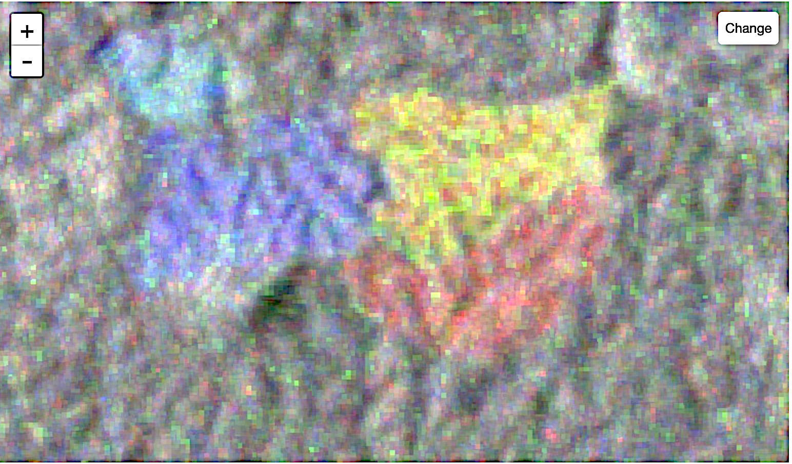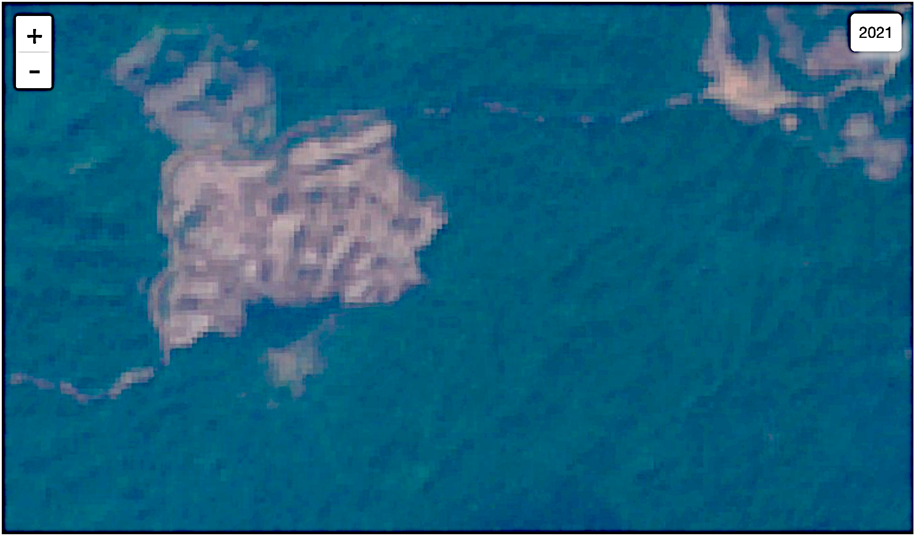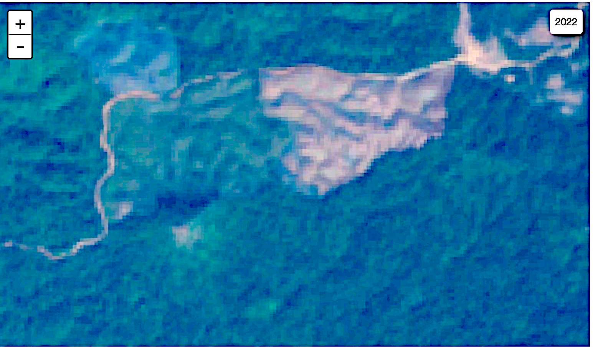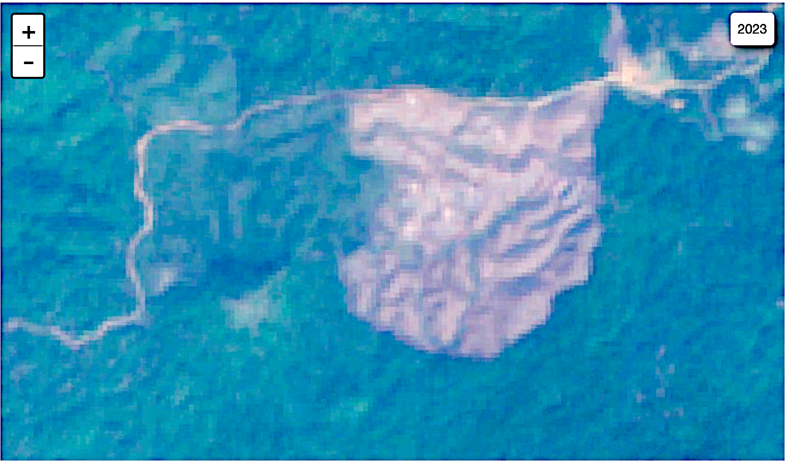
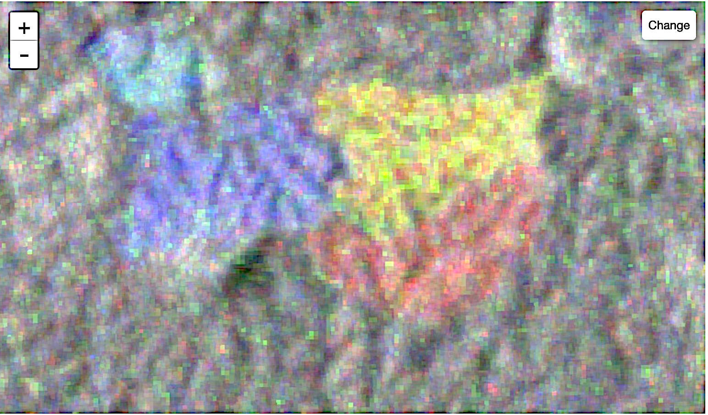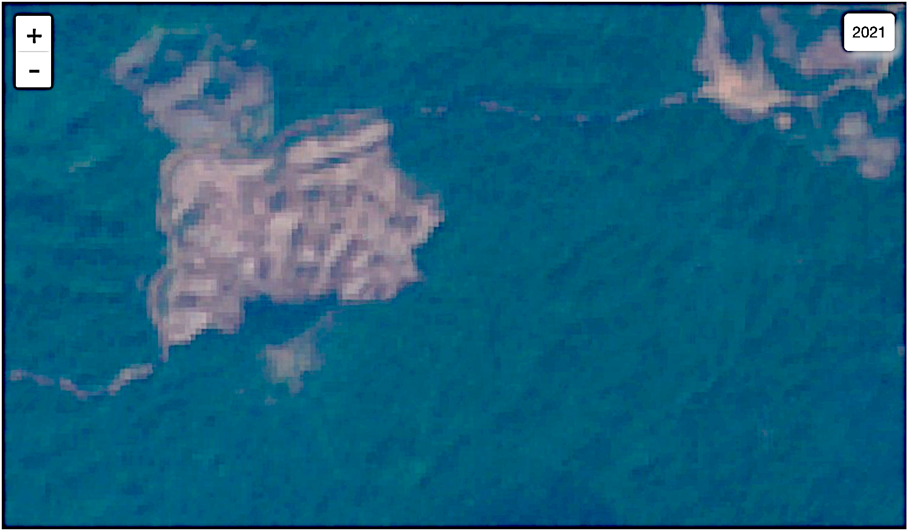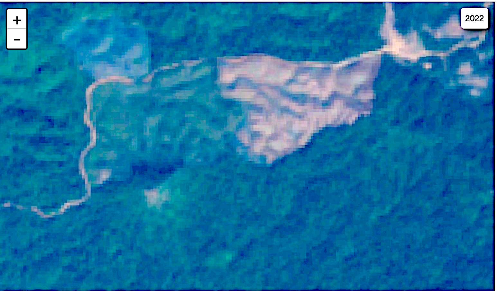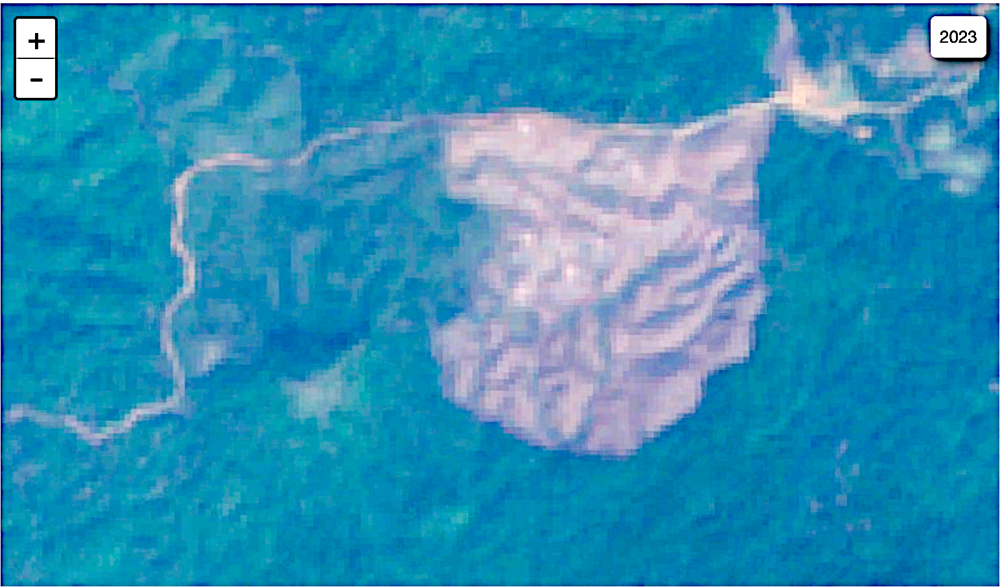
Figure 8.1: Use of SAR to detect forests and changes in forests. Data courtesy ESA and OSM. Visualized on geemap using Google Earth Engine.
8.4 LiDAR
LiDAR, which stands for “Light Detection and Ranging,” represents a sophisticated active remote sensing technology that utilizes LASER light to measure distances with exceptional accuracy. The term itself reflects the integration of LASER and RADAR principles, highlighting its ability to detect and measure distances using light. Developed by Hughes Aircraft, Inc. in the 1960s, LiDAR has evolved into a critical tool in remote sensing, offering capabilities far beyond traditional optical and RADAR methods.
8.4.1 Features of LiDAR
LiDAR utilizes monochromatic light. Lasers emit light at a singular, precise wavelength, conferring LiDAR with exceptionally high spectral resolution. This attribute enables the system to discern subtle variations in surface materials based on their interaction with the LASER light. In topographic LiDAR applications, near-infrared lasers are employed to penetrate vegetation and capture intricate land surface features. In bathymetric LiDAR, green lasers are utilized to measure underwater features, such as seafloor and riverbed elevations, owing to their ability to penetrate water.
The LASER beam within a LiDAR system possesses remarkable directionality, maintaining its strength and focus over extended distances. This characteristic facilitates the detection and measurement of reflected signals from considerable distances, ensuring high-quality data acquisition. The narrow beam width also contributes to the reduction of measurement errors and enhances spatial resolution, rendering LiDAR highly effective for comprehensive and detailed surveys.
LiDAR systems exhibit exceptional precision and resolution, which are paramount in applications necessitating precise measurements. This precision is achieved through the meticulous measurement of time intervals between the emission and reception of LASER pulses, in conjunction with precise positional data obtained from Global Positioning System (GPS) and inertial measurement systems. The culmination of these efforts yields highly accurate spatial data, which can be utilized for a diverse range of applications, including topographic mapping and vegetation analysis.
8.4.2 Fundamental components
To get information about a target, we require three measurements — the position of the LiDAR instrument and the distance and angular measurements of the target from the LiDAR instrument’s position. The exact location of the LiDAR platform — whether mounted on an aircraft, UAV, or a ground-based system — is determined using Differential GPS (DGPS) and an Inertial Measurement Unit (IMU). DGPS provides accurate geographic coordinates, while the IMU measures orientation and movement. Together, these systems ensure that the LiDAR data is accurately georeferenced, allowing for precise spatial analysis.
The distance from the LiDAR instrument to the target is computed using the same formula that we discussed in RADAR distance measurement:
\[ d = \frac{c \times t}{2} \]
In this formula, \(d\) is the distance to the target, \(c\) represents the speed of light (\(299,792,458\) meters per second in a vacuum, with a slight reduction in refractive media like air), and \(t\) is the time it takes for the LASER pulse to travel to the target and return. The factor of 2 accounts for the round-trip distance traveled by the LASER beam.
The angle at which the LASER beam is emitted and received is also crucial for creating three-dimensional (3D) models of the target area. By measuring these angles, LiDAR systems can generate detailed 3D representations of landscapes and structures, capturing intricate details that are essential for accurate spatial analysis.
8.4.3 Modes of operation
LiDAR systems can be operated in various modes to capture different types of data:
First Pulse (FP) Mode: In FP mode, the LiDAR system detects the initial pulse of the reflected LASER beam. This pulse typically corresponds to the elevation of the highest surfaces within the target area, such as tree canopies or building rooftops. FP mode is particularly advantageous for capturing the uppermost features and provides valuable information for applications such as vegetation mapping and urban planning.
Last Pulse (LP) Mode: LP mode detects the last pulse of the reflected LASER beam, which typically corresponds to the ground surface elevation. This mode provides a comprehensive view of the terrain, enabling the generation of essential data for topographic mapping and ground surface analysis. LP mode effectively mitigates the influence of overlying vegetation or structures, thereby offering a more accurate representation of the underlying terrain.
These modes can be employed individually or in conjunction to generate distinct data models:
Digital Elevation Model (DEM): The DEM represents the elevation of the tallest surfaces detected by the first pulse. DEMs are valuable for applications such as flood modeling, land use planning, and environmental assessment.
Digital Terrain Model (DTM): The DTM depicts the ground surface elevation, derived from the last pulse mode. It provides an accurate representation of the terrain without interference from vegetation or structures. DTMs are used for applications such as engineering design, infrastructure development, and geospatial analysis.
Digital Canopy Height Model (DCHM): The DCHM is calculated by subtracting the DTM from the DEM, representing the height of vegetation or other objects above the ground. This model is useful for analyzing forest canopy height, assessing vegetation density, and studying habitat structure. DCHMs provide insights into forest health, biomass, carbon sequestration, and ecological dynamics.
8.4.4 Applications in forestry
LiDAR technology has proven to be exceptionally versatile and valuable in forestry and ecological studies, offering numerous applications.
Aerial and space-based surveys: LiDAR systems are deployed on various platforms, including aircraft, UAVs, and space-based missions such as NASA’s GEDI (Global Ecosystem Dynamics Investigation) aboard the International Space Station [Figure 8.2a]. This deployment option allows for data collection at both local and global scales, enabling comprehensive forest monitoring and analysis.
Topographic mapping: By utilizing FP and LP modes, LiDAR generates highly accurate DEMs and DTMs, providing detailed information on ground topography and forest canopy heights [Figure 8.2b, c]. This capability is crucial for understanding the structure and dynamics of forest ecosystems, assessing landform changes, and supporting sustainable land management practices.
Biomass estimation: LiDAR data can be used to estimate biomass density in forest stands by analyzing canopy-penetrating LASER beams [Figure 8.2d–g]. This information supports the creation of detailed canopy structure models, offering insights into forest carbon storage, productivity, and ecological health. Accurate biomass estimates are essential for carbon accounting and forest conservation efforts.
Monitoring changes in forests: LiDAR’s ability to provide continuous, high-resolution measurements enables the monitoring of changes in forests over time. This capability is valuable for tracking the effects of disturbances such as wildfires, logging, and disease outbreaks. LiDAR data helps researchers and policymakers assess forest recovery, evaluate the impacts of environmental changes, and plan effective conservation strategies.
Terrestrial Laser Scanning (TLS): LiDAR systems can also be used in a horizontal manner as Terrestrial Laser Scanners (TLS), which are either mounted on tripods or UAVs for deployment in dense forest areas. TLS provides detailed, high-resolution information about forest attributes at a more localized scale, enhancing our understanding of forest structure, species composition, and habitat characteristics [Figure 8.2h].
In this way, LiDAR technology has revolutionized the field of remote sensing by providing precise, high-resolution spatial data. Its applications span a wide range of fields, from forestry and environmental monitoring to urban planning and infrastructure development. The ability to deliver detailed 3D models and accurate measurements makes LiDAR an indispensable tool for advancing our understanding of natural and built environments, supporting informed decision-making, and fostering sustainable resource management.
 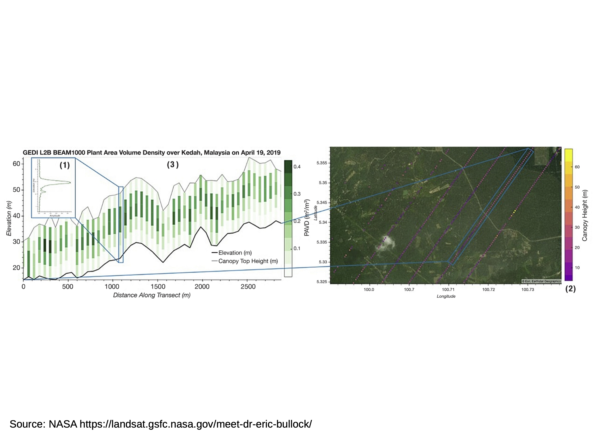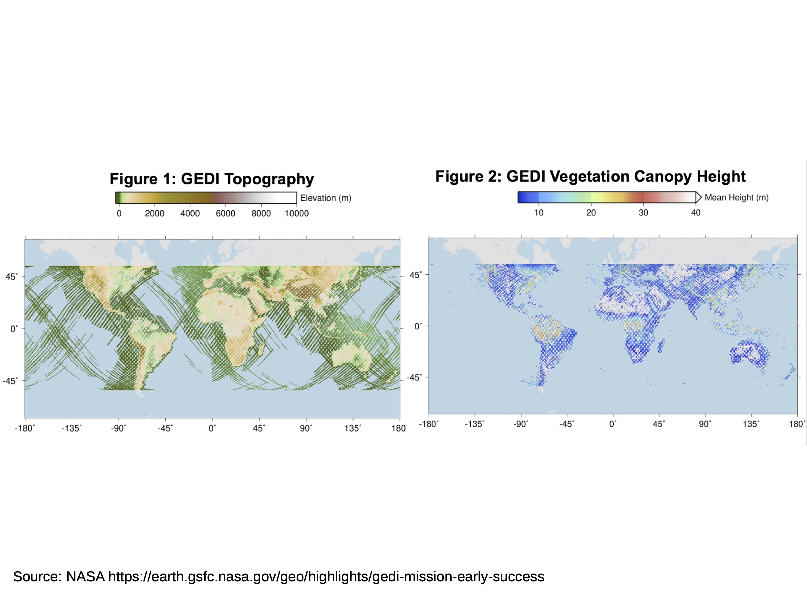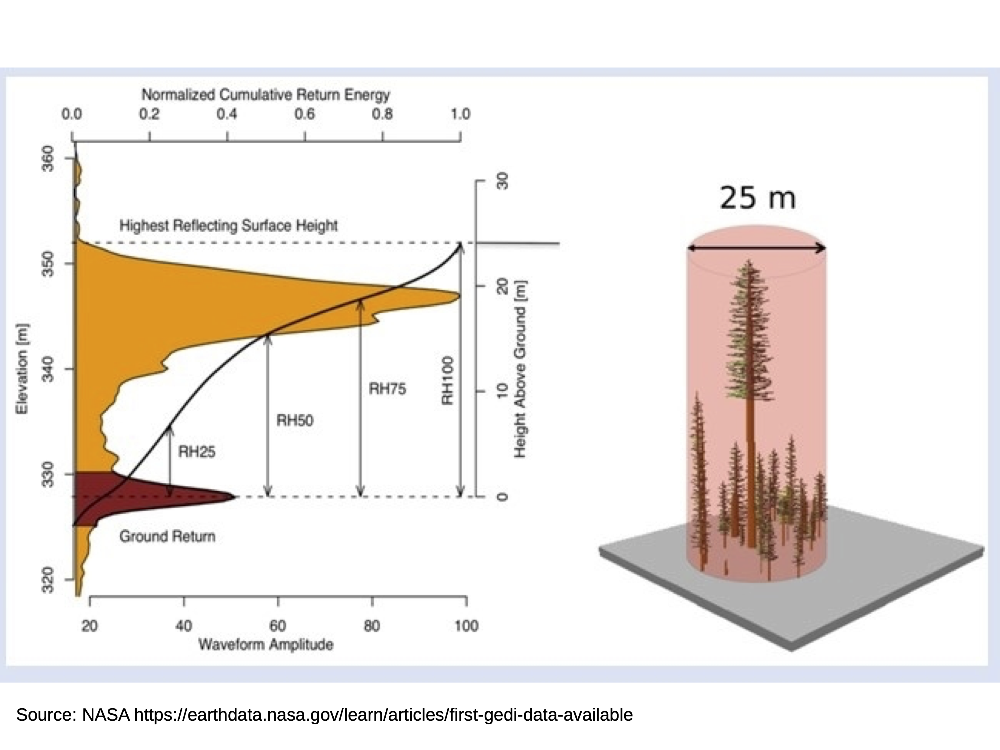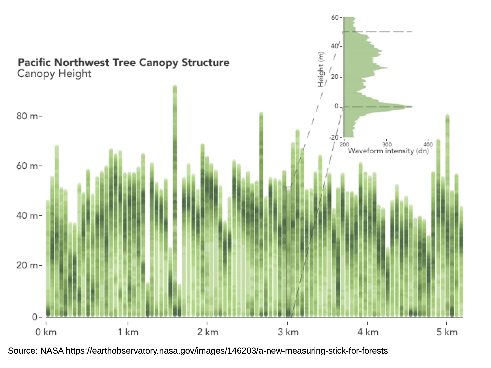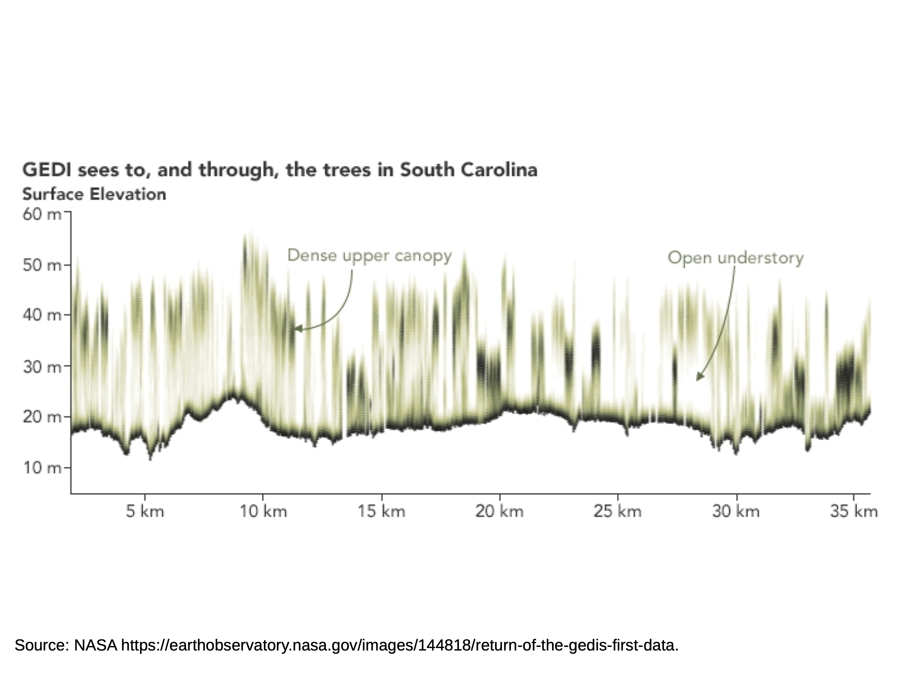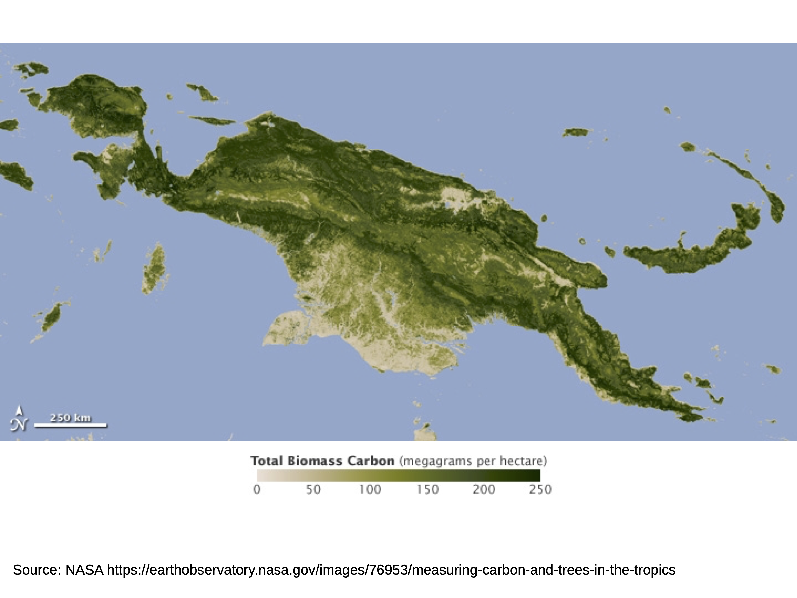
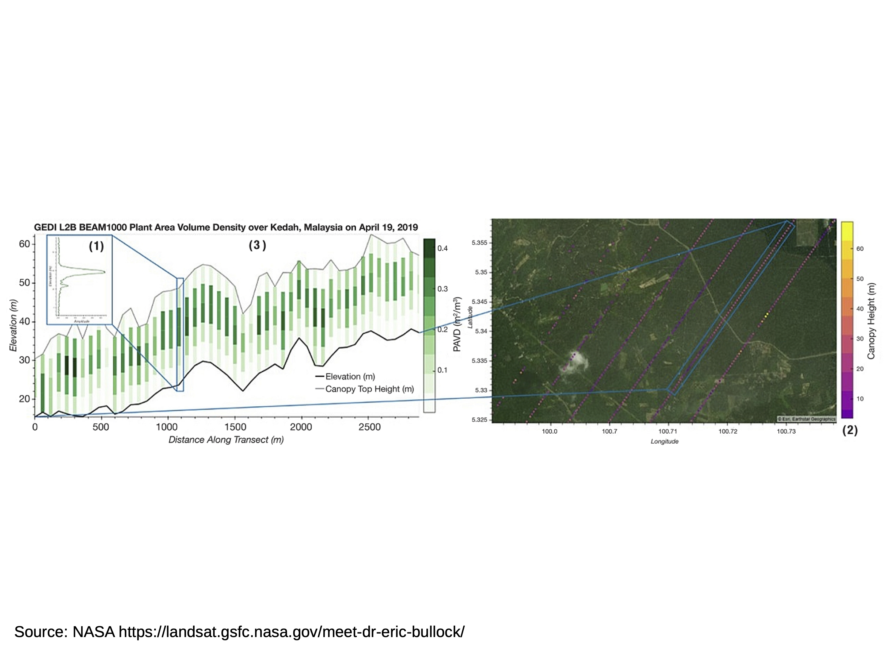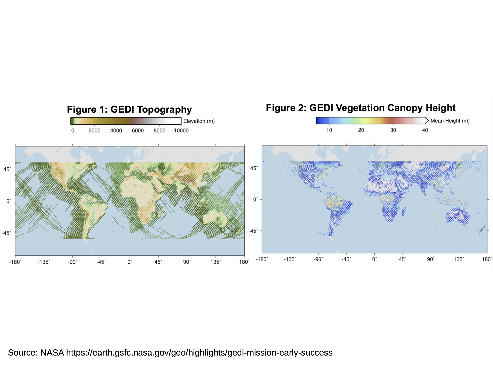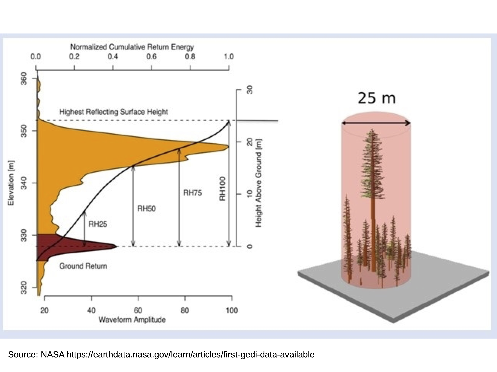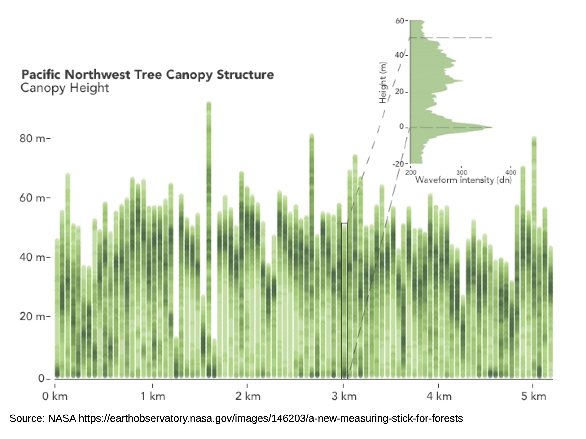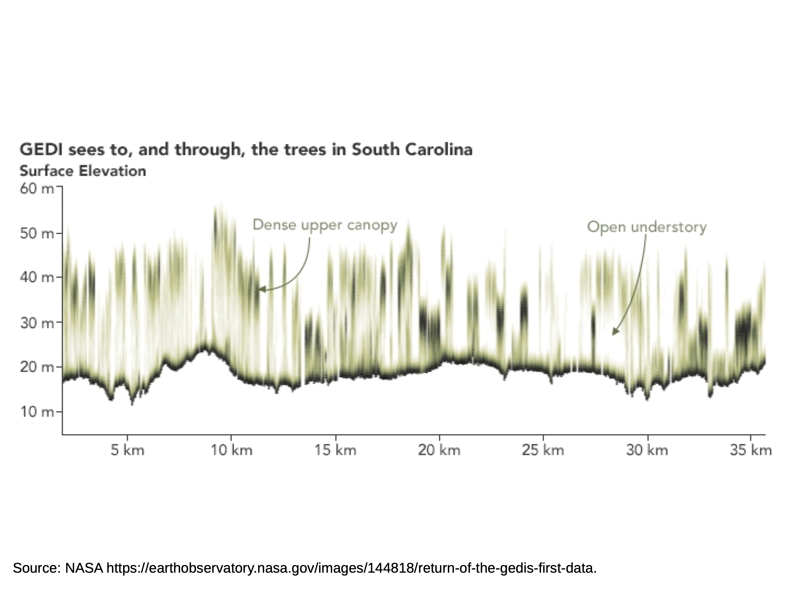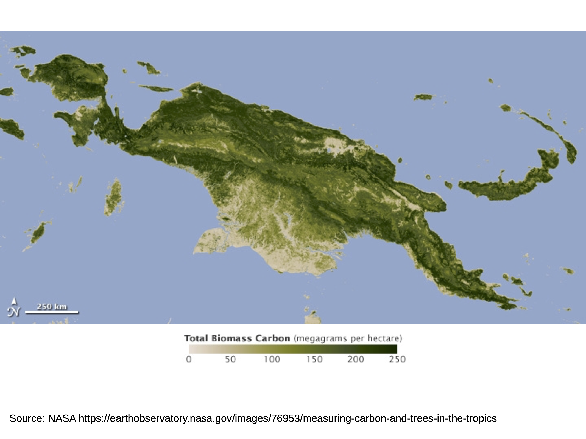
Figure 8.2: Some uses of LiDAR in forestry.
8.5 Geographic Information Systems (GIS)
Geographic Information Systems (GIS) are sophisticated frameworks that integrate hardware, software, and human expertise to capture, store, manipulate, analyze, manage, and present spatial data. Unlike traditional methods of analyzing geographic data, which involved physical maps and manual overlays, modern GIS employs digital technology to create layered digital representations of spatial information. This digital approach allows for more precise analysis and visualization of geographic phenomena.
In the contemporary era of technological advancement, they have become indispensable tools for managing and analyzing spatial data. The rise of GIS technology has revolutionized how we interact with and understand geographic information, providing profound insights across a multitude of fields including urban planning, environmental management, and disaster response.
8.5.1 Core components of GIS
- Hardware comprises:
- Computers: High-performance systems designed to handle extensive datasets and complex analytical tasks.
- GPS devices: Instruments used to acquire accurate geographic coordinates.
- Sensors: Devices that collect environmental data, such as satellite and ground-based sensors, crucial for gathering spatial information.
- Servers: Systems that store and manage GIS data, facilitating processing and access.
- Software includes:
- QGIS: An open-source GIS software known for its comprehensive functionality and user-friendly interface. QGIS supports various spatial analysis tasks and is highly extensible through plugins.
- GRASS GIS: Another open-source GIS tool, valued for its advanced geospatial analysis capabilities and data modeling support.
- ArcGIS: A commercial GIS software suite developed by Esri, providing a broad range of tools for spatial analysis, mapping, and data management. It is widely utilized in various industries for its extensive features and robust support.
- Erdas Imagine: A commercial GIS software suite developed by Hexagon Geospatial, used for processing and analyzing geospatial data such as satellite imagery. It offers tools for image classification, terrain modeling, and spatial analysis, widely used in fields like environmental monitoring and urban planning.
- Humanware encompasses:
- GIS professionals: Specialists who design, implement, and manage GIS projects, ensuring effective data integration and analysis.
- Data analysts: Individuals who interpret GIS data to derive meaningful insights and support decision-making processes.
- Decision-makers: Stakeholders who utilize GIS outputs to make informed decisions in fields such as urban planning, environmental conservation, and disaster management.
8.5.2 Data Integration in GIS
Modern GIS operates through a layered digital framework where geographic data is represented in discrete layers. Each layer may represent different types of data, such as land use, elevation, or infrastructure. By integrating and analyzing these layers, GIS enables the exploration of complex spatial relationships and patterns. For instance, combining land use data with demographic information can provide insights into urban growth and infrastructure needs.
A key strength of GIS is its ability to integrate diverse data sources, enhancing spatial analysis. Sources of data include:
Satellite imagery: Provides extensive coverage and detailed information on land cover and land use. GIS integrates satellite images with ground-truth data from field surveys to create accurate and comprehensive maps.
Aerial photographs: Offer high-resolution views of specific areas, useful for updating and refining GIS data layers.
Field surveys: Provide on-the-ground data to validate and enhance remote sensing information, including vegetation assessments, soil sampling, and infrastructure inspections.
Scanned maps and toposheets: Historical maps and topographic sheets offer valuable context and historical data.
GPS coordinates: Precise location data collected through Global Positioning System technology.
Photographs and documents: Historical photographs and documents provide additional contextual information.
8.5.3 Applications in forestry and wildfire management
Geographic Information Systems play a pivotal role in both forestry management and wildfire detection and response. In forestry management, GIS facilitates the creation of comprehensive maps of forested areas, encompassing tree species, age classes, and health conditions. These maps serve as indispensable tools for effective forest management and conservation planning. Furthermore, the integration of LiDAR data with GIS provides precise estimates of forest biomass, which is crucial for carbon accounting, ecological assessment, and resource management. GIS also supports the analysis and mapping of wildlife habitats within forests, facilitating conservation efforts by identifying critical habitats and monitoring changes over time.
In the realm of wildfire detection and management, GIS assists in analyzing factors that contribute to wildfire risk, such as vegetation types, slope, and historical fire patterns. This analysis enables the identification of high-risk areas and the development of targeted mitigation strategies. During a wildfire, GIS integrates data from satellite sensors, weather stations, and ground reports to provide real-time updates on fire behavior, spread, and containment efforts. This information is pivotal for coordinating emergency responses and resource allocation. Post-wildfire, GIS is utilized to assess damage, evaluate the effectiveness of fire management strategies, and plan recovery and rehabilitation efforts. It assists in mapping affected areas, tracking recovery progress, and supporting long-term ecological monitoring.
8.6 Drones
Drones, also known as Unmanned Aerial Vehicles (UAVs), are aircraft that operate without a human pilot onboard. These autonomous or remotely controlled devices represent a substantial advancement in remote sensing technology, providing a novel platform for capturing aerial data. In contrast to conventional methods that entail the utilization of large aircraft, balloons, or satellites, drones possess the capability to operate at considerably lower altitudes, thereby enabling the acquisition of imagery with enhanced spatial resolution.
8.6.1 Working of drones
Drones function through a harmonious integration of hardware and software components, meticulously designed to efficiently capture and transmit data. The foundational elements of this system encompass the airframe, flight control system, navigation and communication protocols, sensors and cameras, and power supply.
The airframe is the structural framework of the drone, typically made from lightweight yet durable materials such as carbon fiber or plastic. It supports the drone’s propulsion system, which consists of rotors or propellers that generate lift and enable flight. Fixed-wing drones utilize aerodynamic surfaces to maintain flight over longer distances.
The flight control system acts as the drone’s brain, processing input from various sensors and executing control commands to ensure stability and precise navigation. It includes gyroscopes and accelerometers that measure orientation and movement to maintain smooth and controlled flight.
Navigation and communication are critical for drone operation. Global Positioning System (GPS) technology provides location data, allowing the drone to follow predefined flight paths and maintain altitude. The communication system utilizes radio frequency (RF) to facilitate data exchange between the drone and the operator, encompassing control commands and telemetry information. Additionally, certain drones provide live video streaming capabilities, which are crucial for real-time monitoring and visualization.
Drones can be equipped with a variety of sensors and cameras, including high-resolution optical cameras, LiDAR sensors, and thermal imaging cameras.
The primary power source for drones is usually rechargeable batteries that provide power to the motors, sensors, and communication systems. Battery life is a crucial factor in determining the drone’s operational range and flight duration.
Software plays a crucial role in drone operations. Flight planning and control software allows operators to program flight paths, set waypoints, and manage the drone’s movements [Figure 8.3b]. Advanced software may offer autonomous flight capabilities and real-time data processing. Data processing software is used to analyze and interpret the data collected by the drone’s sensors, including stitching images together and generating maps or models.

 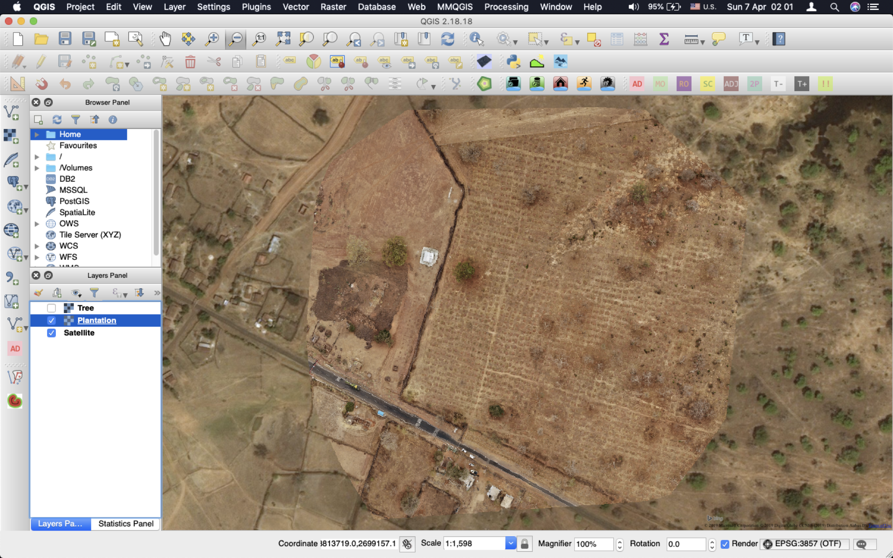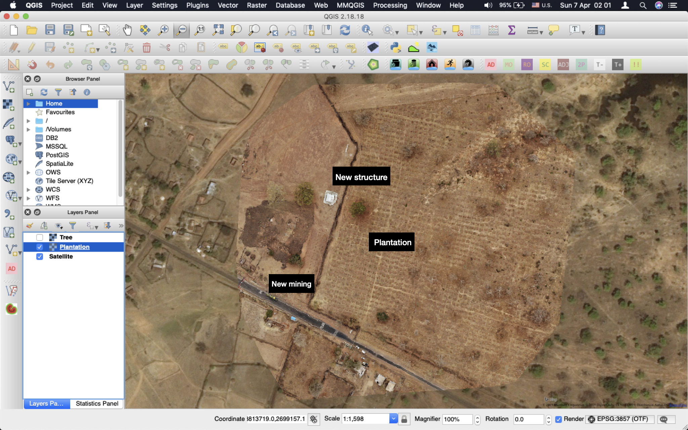
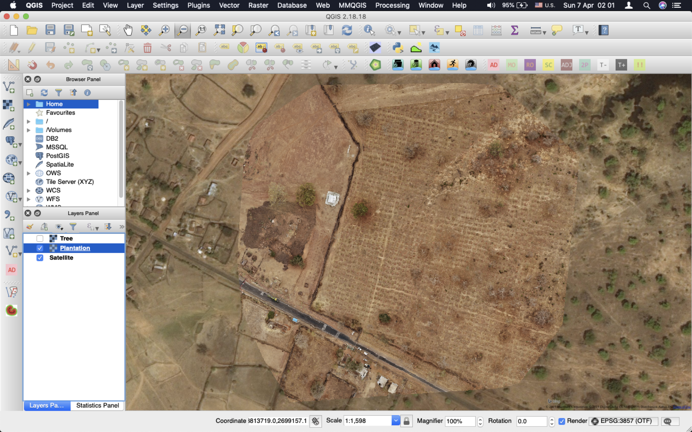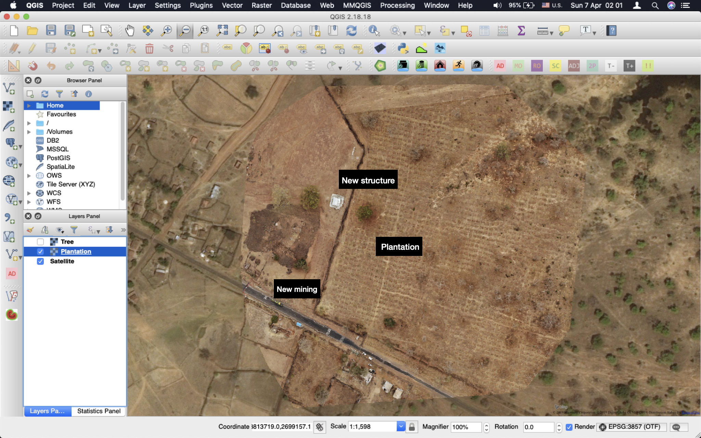

Figure 8.3: Some uses of drones in forest remote sensing.
8.6.2 Advantages of drones
Drones offer several advantages over conventional aerial data collection techniques. Their ability to operate at low altitudes allows for the acquisition of high-resolution imagery, revealing finer details than satellite imagery. This enhanced spatial resolution is particularly beneficial for comprehensive forest inventory and mapping.
Drones provide flexibility in flight altitude, which directly influences spatial resolution and areal coverage. Flying at higher altitudes results in lower spatial resolution but covers a larger area [Figure 8.3c], while lower altitudes offer higher resolution but cover a smaller area [Figure 8.3d]. This flexibility allows for targeted data collection based on specific needs. At very low heights, drones can capture detailed imagery that is essential for applications such as distinguishing individual leaves and assessing fine-scale vegetation changes [Figure 8.3d].
One of the key advantages of drones is their ability to capture and stitch together multiple images into a seamless, geo-referenced map [Figure 8.3e]. This process involves programming sufficient overlap between adjacent images, which is then used by computer software to create a continuous map. The stitched image not only confirms that the images are from the same location but also allows for the assessment of changes over time, such as detecting alterations in forest cover or infrastructure [Figure 8.3f].
Automated analysis of stitched images can further enhance the utility of drone data. For example, contrast-enhanced images can be processed by artificial intelligence algorithms to identify and quantify specific features, such as planting pits [Figure 8.3g–h]. These techniques can also be applied to wildfire management, where drones help delineate affected areas and evaluate the effectiveness of response measures.
8.6.3 Applications of drones
In the field of forestry, drones serve as indispensable tools for a wide range of applications. They offer high-resolution imagery, facilitating the meticulous mapping of forest areas. This imagery facilitates the inventory of tree species, their age, and distribution. Furthermore, the utilization of LiDAR sensors enables the generation of three-dimensional data on forest structure, encompassing canopy height and tree density. This data is crucial for evaluating forest biomass and volume.
Drones equipped with multispectral sensors are frequently utilized for monitoring vegetation health. These sensors analyze reflectance in various spectral bands, enabling the identification of stress, diseases, or pest infestations in trees. Indices such as the Normalized Difference Vegetation Index (NDVI), derived from drone imagery, are used to assess vegetation vigor and productivity, supporting effective forest management and conservation efforts.
In the realm of wildlife monitoring, drones provide a non-invasive method for tracking animal movements, nesting sites, and population densities. They facilitate habitat assessment by mapping critical areas and monitoring changes over time. In wildlife management, drones are employed for animal herding and darting operations.
Drones also play a pivotal role in forest health assessment. They facilitate rapid damage assessments following storms or fires, aiding in recovery planning and evaluating the efficacy of response strategies. Regular drone flights enable the timely detection of early indications of diseases or pests, facilitating prompt intervention.
Drones are particularly useful in wildfire management, offering capabilities that enhance pre-fire risk assessments, real-time detection and monitoring, and post-fire recovery. Prior to a wildfire, drones can conduct risk assessments by mapping areas vulnerable to fire and identifying potential hazards, aiding in wildfire prevention efforts.
During a wildfire, drones equipped with thermal and optical sensors can provide real-time data on fire spread, intensity, and behavior. Live video streaming from drones enhances situational awareness and coordination among firefighting teams, while thermal imaging helps detect hotspots and smoldering areas, guiding firefighting efforts.
After a wildfire, drones are used to map burned areas and assess damage. This information is paramount for recovery planning and assessing the efficacy of fire management strategies. Drones also support post-fire rehabilitation by evaluating soil erosion, monitoring vegetation recovery, and ensuring that recovery efforts are successful.
Furthermore, drones contribute to public safety by providing aerial perspectives of hazardous areas, safeguarding first responders, and disseminating information regarding fire safety and recovery initiatives to the public.
In this manner, drones have revolutionized the domains of forestry and wildfire management by offering high-resolution imagery, real-time monitoring capabilities, and sophisticated data collection methodologies. Their capacity to operate at low altitudes and capture detailed data enhances our comprehension and management of forest resources and wildfire incidents. As drone technology advances, its applications are anticipated to expand, providing even greater opportunities for enhancing forest management and wildfire response.